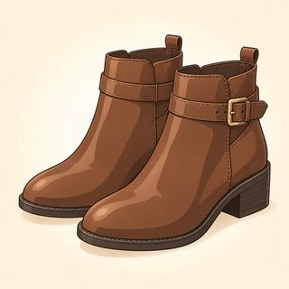

Experiences & Advice — Classroom Materials
Everything to print for Classes C10–C12: picture flashcards, the "Have you ever…?" Find Someone Who game, experience identity cards, traffic-light cards and the rules information gap, the problem-page cards, the station and hotel role-plays, the trip cards for the travel story, the C12 speaking checklist, and the teacher's listening scripts.
What to Print
| Set | What | How many | Used in |
|---|---|---|---|
| A | Picture flashcards (experiences, rules & advice, travel) + traffic-light cards | 1 set for the board | C10, C11, C12 |
| B | Find Someone Who: "Have you ever…?" + follow-up (game) | 1 per learner | C10 |
| C | Experience identity cards (4) | 1–2 sets, on a side table | C10, C11 warmer |
| D | Rules information gap A/B (3 scenarios) | 1 A/B pair per two learners | C11 |
| E | Problem-page cards (8) + adviser card | 1 set per group of 3 | C11 |
| F | Travel role-play cards A/B (station, hotel) | 1 set per pair | C12 |
| G | Trip cards for the travel story (6) | 2–3 sets, on a side table | C12 |
| H | Speaking checklist: descriptors, class grid, learner score slips | Teacher: 1 grid · learners: 1 slip each | C12 → C13 |
| I | Listening & dictation scripts | Teacher only | C10, C11, C12 |
A · Picture Flashcards — Life Experiences (4.1)
Show the picture, elicit the phrase, then drill the question: "Have you ever flown in a plane?" Write the participle on the back of each card in pencil for the participle drill.


A · Flashcards — Rules & Advice (4.2)



Traffic-light cards (one set for you; one set per learner for literacy support)
A · Flashcards — Travel (4.3)


B · Game — Find Someone Who… Have You Ever? (C10)
One sheet per learner. Stand up and walk. Ask "Have you ever ridden a horse?" If the answer is "Yes, I have," write the name. Then ask the follow-up question in the past simple and write a short note. One name per box. "No, never" is fine: say "OK, thanks!" and move on. Anyone can say "Pass!"
| Find someone who has ever… | Name | Follow-up (past simple) | Note |
|---|---|---|---|
| 0. ridden a horse (example) | Amir | Where did you ride it? | Morocco, age 10 |
| 1. been to another country | Where did you go? | ||
| 2. eaten Thai food | Where did you eat it? | ||
| 3. swum in the ocean | When did you swim there? | ||
| 4. sung karaoke | What song did you sing? | ||
| 5. cooked for more than ten people | What did you cook? | ||
| 6. lost a phone or keys | Where did you lose it? | ||
| 7. won a prize or a game | What did you win? | ||
| 8. met a famous person | Who did you meet? | ||
| 9. seen snow | When did you see it? | ||
| 10. climbed a mountain | Which mountain did you climb? | ||
| 11. made a birthday cake | Who did you make it for? | ||
| 12. danced at a wedding | Whose wedding was it? | ||
| ⭐ Bonus: has never drunk coffee | What do you drink in the morning? |
🗣️ Report to a partner: "Amir has ridden a horse. He rode one in Morocco when he was ten."
Before the mingle, drill the switch on the board: Have you ever ridden…? → Yes, I have. → Where did you ride it? → I rode it in… The bonus row needs a "No, never" answer to get a name, which is good practice with never. Rows are chosen to be light and everyday; nothing on the sheet asks about health, work status, family or migration. Learners with an experience identity card (Set C) answer as their card person. Literacy-support version: cut the sheet after row 6 and give it with the matching flashcards as picture cues.
C · Experience Identity Cards (4.1)
Any learner may use a card instead of their real life, in any task: no reason needed. Put the cards on a side table. The card person's experiences are in the present perfect; the details (with a time) are in the past simple, so the card models the switch.
Marco — bus driver
- I've been to Canada. (I visited my cousin in 2019.)
- I've ridden a horse. (I rode one when I was eight.)
- I've sung karaoke. (I sang on my last birthday.)
- I've won a prize. (I won a football game in 2022.)
- I've never seen a whale.
- I've never eaten sushi.
Hana — nurse
- I've swum in the ocean. (I swam in Hawaii in 2022.)
- I've cooked for twenty people. (I cooked for my sister's wedding.)
- I've met a famous person. (I met a soccer player at the airport last year.)
- I've danced at a wedding. (I danced all night!)
- I've never ridden a horse.
- I've never climbed a mountain.
Samuel — student
- I've lost my phone. (I lost it on the bus last month.)
- I've won a prize. (I won a cooking contest in 2020.)
- I've seen snow. (I saw it in New York last winter.)
- I've eaten Thai food. (I ate it at a friend's house.)
- I've never flown in a plane.
- I've never sung karaoke.
Grace — grandmother
- I've climbed a mountain. (I climbed it when I was twenty-five.)
- I've made a wedding cake. (I made one for my son in 2015.)
- I've been to Mexico. (I went three times!)
- I've met a famous person. (I met a singer at a concert in 1990.)
- I've never lost my phone.
- I've never drunk coffee. (I drink tea.)
D · Rules Information Gap — Do I Have to…? (4.2)
Pairs, face to face; don't show the cards. A is new and asks "Do I have to…?" / "Can I…?" B answers from the card and gives the reason with because. A writes 🟢 (have to), 🟡 (don't have to) or 🔴 (mustn't / can't). Then swap roles with the next scenario. Everyday places only.
Your first day at a warehouse
Ask your coworker. Write 🟢 🟡 or 🔴.
| Do I have to wear a safety vest? | |
| Do I have to wear a uniform? | |
| Do I have to wear my badge? | |
| Can I use my phone on the floor? | |
| What time do I have to clock in? | |
| Do I have to bring lunch? | |
| Can I eat in the loading area? | |
| Do I have to wash my hands after the break? |
You know the rules
Answer. Give the reason.
- 🟢 You have to wear a safety vest, because the trucks are big.
- 🟡 You don't have to wear a uniform. Your own clothes are fine.
- 🟢 You have to wear your badge. Everyone does.
- 🔴 You can't / mustn't use your phone on the floor. It's dangerous.
- 🟢 You have to clock in at 7:00.
- 🟡 You don't have to bring lunch on Fridays, because lunch is free.
- 🔴 You mustn't eat in the loading area.
- 🟢 You have to wash your hands after the break.
Extra advice: You should wear comfortable shoes!
The community pool
Ask the pool worker. Write 🟢 🟡 or 🔴.
| Do I have to pay today? (Monday) | |
| Do I have to take a shower first? | |
| Do I have to bring a towel? | |
| Do I have to wear a swim cap? | |
| Can I run by the pool? | |
| Can I bring a glass bottle? | |
| Do I have to show my card? | |
| Can I swim when there's no lifeguard? |
You know the rules
Answer. Give the reason.
- 🟡 You don't have to pay on Mondays. It's free!
- 🟢 You have to take a shower first, because the water must be clean.
- 🟡 You don't have to bring a towel. We have free towels.
- 🟢 You have to wear a swim cap if your hair is long.
- 🔴 You mustn't / can't run, because the floor is wet.
- 🔴 You mustn't bring glass bottles.
- 🟢 You have to show your card at the door.
- 🔴 You can't swim when the lifeguard isn't there.
Extra advice: You should come early. It's busy after 5!
The school office (a new school for your child)
Ask the office worker. Write 🟢 🟡 or 🔴.
| Do I have to fill in a form? | |
| Do I have to bring a bill with my address? | |
| Do I have to buy a uniform? | |
| Do I have to pay for lunch? | |
| Can I park in the bus lane? | |
| Do I have to sign the form? | |
| Can I leave my little boy in the car? |
You know the rules
Answer. Give the reason.
- 🟢 Yes, you have to fill in this form.
- 🟢 You have to bring a bill with your address, for example a gas bill.
- 🟡 You don't have to buy a uniform. New students get a free one.
- 🟡 You don't have to pay for lunch. It's free for all students.
- 🔴 You mustn't / can't park in the bus lane, because the buses need it.
- 🟢 You have to sign the form, here at the bottom.
- 🔴 You mustn't leave children in the car. Bring him in!
Extra advice: You should visit the classroom before the first day.
E · Problem-Page Cards — "Ask Ana" (4.2)
One set per group of three, face down. The reader reads the problem aloud as their own. Each adviser gives one should / shouldn't sentence and, if they can, one have to / don't have to fact. The reader chooses the best advice. All problems are everyday ones.
Dear Ana, I'm always tired at work. I go to bed at one in the morning and I get up at six. What should I do?
Dear Ana, I start a new job on Monday. I'm very nervous, and I don't know the rules. What should I do?
Dear Ana, my new neighbors play loud music every night. I can't sleep. What should I do?
Dear Ana, I want to speak English better, but I'm shy. I never talk in class. What should I do?
Dear Ana, my son doesn't want to do his homework. He only wants to play video games. What should I do?
Dear Ana, I have a bad cold and a headache, and I have a job interview tomorrow. What should I do?
Dear Ana, my phone is broken, and I need it for work. A new phone is expensive. What should I do?
Dear Ana, I want to be healthy, but the gym is very expensive. What should I do?
Give good advice
- You should… / You shouldn't…
- Maybe you should… (soft)
- I think you should… (soft)
- You don't have to… (it's your choice)
- You have to… (it's a rule)
- …because…
Answer the advice
- Good idea! Thanks.
- Hmm, I can't, because…
- That's a great idea. I think I'll…
- What else should I do?
✏️ Our best advice (for the "Ask the Class" board): ________________________
Sample advice for monitoring: 1 You should go to bed earlier. You shouldn't look at your phone at night. · 2 You should ask your manager about the rules. You don't have to know everything on day one. · 3 Maybe you should talk to them. You should write a friendly note. · 4 You should talk to one classmate first. You don't have to be perfect. · 5 You should make a homework time every day. He has to finish his homework before games. · 6 You should rest and drink water. You should go to bed early. · 7 You should ask a phone repair shop. You don't have to buy a new phone. · 8 You should walk every day. You don't have to go to a gym: the park is free.
F · Travel Role-Play Cards — Station & Hotel (4.3)
Pairs. In Role-play 1, A is the traveler and asks; in Role-play 2, B is the guest and asks. Start with Excuse me… and use please. The person who asks writes the answers.
At the train station
You want a one-way ticket to Chicago. Ask and write:
| What time does it leave? | |
| Which platform is it? | |
| What time does it arrive? | |
| How much is it? |
Start: "Excuse me, a ticket to Chicago, please."
At the train station
Answer the traveler.
- The next train leaves at 10:25.
- It's platform 6, over there, past the shops.
- It arrives at 2:50.
- A one-way ticket is $38.
End: "Here's your ticket. Have a good trip!"
At the hotel
Answer the guest.
- Yes, a reservation for Silva, 3 nights.
- Breakfast is included, from 6:30 to 9:30.
- Check-out is at 11 a.m.
- Yes, Wi-Fi is free. The password is SUNNY24.
- Your room is 214, on the second floor. Here's your key card.
End: "Enjoy your stay!"
At the hotel
Your name is Silva. You booked a room online. Ask and write:
| How many nights? | |
| Is breakfast included? What time? | |
| What time is check-out? | |
| Is there Wi-Fi? Password? | |
| Room number? |
Start: "Hello, I have a reservation. The name is Silva."
G · Trip Cards — for the Travel Story (4.3)
For any learner who prefers not to tell a real trip, or who can't think of one. The notes follow the five steps of the story frame. Learners turn the notes into sentences and may change anything. Any trip is a real trip: a day at the beach counts.
A day at the beach
- ① last July · with my kids · hot and sunny
- ② took the bus · swam · ate ice cream · built a sand castle
- ③ the beach / busier than the park · a lot of families
- ④ never / see / dolphins before
- ⑤ next summer / go again · take a picnic
A family wedding in Houston
- ① two years ago · my cousin's wedding · very hot
- ② drove 5 hours · danced · met my cousin's new family
- ③ the party / bigger than my wedding · a lot of food
- ④ the best party / ever / go to
- ⑤ next year / visit them again · stay longer
A work training in Denver
- ① last spring · three days · cold in the morning
- ② flew there · learned about safety · had dinner with coworkers
- ③ the hotel / more comfortable than my home · a few mountains near the city
- ④ never / stay in a hotel alone before
- ⑤ next time / take my family · I think / visit the mountains
A weekend in the mountains
- ① last fall · with friends · the trees were red and yellow
- ② hiked · cooked outside · sang songs at night
- ③ the mountain / quieter than the city · not many people
- ④ never / sleep in a tent before
- ⑤ one day / climb a bigger mountain
A city trip to Washington, D.C.
- ① last April · with my sister · rainy but beautiful
- ② took the train · visited free museums · saw the White House
- ③ the museums / the most interesting part · a lot of tourists
- ④ the biggest museum / ever / see
- ⑤ next time / stay a week · I'll bring an umbrella!
A dream trip to Japan (imagined)
- ① "Let's pretend!" · last spring · Tokyo · cherry trees
- ② took the fast train · ate sushi · visited a temple
- ③ Tokyo / bigger and busier than my city · a lot of people
- ④ never / eat real sushi before · the best food / ever / eat
- ⑤ next year / going to learn some Japanese
H · C12 Speaking Checklist — My Travel Story (feeds C13)
Score each learner's whole performance (the story plus the answers to listeners' questions): five criteria, 0–3 points each, total /15. Score what a patient listener understands, not an accent. Write one example you heard in the notes column; it makes the feedback slip easy to write.
| Criterion | 3 | 2 | 1 | 0 |
|---|---|---|---|---|
| 1 · Task: the five steps | All 5 steps, clear order; listener knows where, when, what happened, one experience and a plan | 4 steps, or 5 with a gap in order | 2–3 steps; hard to follow | No story yet |
| 2 · Past forms (Module 1) | was/were and past simple mostly correct, regular + irregular; -ed heard | Mostly correct; a few base forms ("we go") | Many present forms; some past | No past forms |
| 3 · Tense switching (Modules 3–4) | Present perfect for experience with no time; past simple with a time; going to / will for the plan | Two of the three correct; one slip such as "I have been there last year" | One of the three; tenses mixed | One tense only |
| 4 · Linking & organization (Module 2 + 4.3) | 3+ different linking words; comparison or quantifier used; flows as a story | 2 linking words; some description | A list of facts; "and… and…" | Single words or phrases |
| 5 · Fluency, pronunciation & interaction | Keeps going with short pauses; easy to understand; answers a question in a full sentence | Some long pauses; mostly clear; short answers | Many pauses; listener must work hard | Can't continue without help |
Copy each learner's total to the class register. Then use the lowest criterion to choose a catch-up station for C13: criterion 3 ≤ 1 → present perfect vs past simple station (Workbook 4.1 Ex 3, Find Someone Who); criterion 2 ≤ 1 → past forms station (Module 1 irregular verbs); criterion 4 ≤ 1 → linking and comparing station (Workbook 4.3 Ex 4, Module 2). If Progress Test 1 has its own speaking task, keep this grid anyway: it is your spoken-narrative evidence for Modules 1–4. Learners you didn't hear in C12 tell their story (live or recorded) during the C13 catch-up time.
Class grid
| Name | 1 Task | 2 Past | 3 Switch | 4 Linking | 5 Fluency | /15 | C13 station | Notes (a sentence I heard) |
|---|---|---|---|---|---|---|---|---|
Learner score slips (cut; give one to each learner in C13)
My Travel Story · Name: ______________
Five steps ☐ · Past ☐ · Switch ☐ · Linking ☐ · Fluency ☐ Total: ____ /15
⭐ Well done: ___________________________
➡️ My next step: ________________________
My Travel Story · Name: ______________
Five steps ☐ · Past ☐ · Switch ☐ · Linking ☐ · Fluency ☐ Total: ____ /15
⭐ Well done: ___________________________
➡️ My next step: ________________________
My Travel Story · Name: ______________
Five steps ☐ · Past ☐ · Switch ☐ · Linking ☐ · Fluency ☐ Total: ____ /15
⭐ Well done: ___________________________
➡️ My next step: ________________________
My Travel Story · Name: ______________
Five steps ☐ · Past ☐ · Switch ☐ · Linking ☐ · Fluency ☐ Total: ____ /15
⭐ Well done: ___________________________
➡️ My next step: ________________________
My Travel Story · Name: ______________
Five steps ☐ · Past ☐ · Switch ☐ · Linking ☐ · Fluency ☐ Total: ____ /15
⭐ Well done: ___________________________
➡️ My next step: ________________________
My Travel Story · Name: ______________
Five steps ☐ · Past ☐ · Switch ☐ · Linking ☐ · Fluency ☐ Total: ____ /15
⭐ Well done: ___________________________
➡️ My next step: ________________________
Write the "Well done" in the learner's own words from your notes ("You said: It was the best day I've ever had. Great!"). Keep the "next step" to one small, doable thing ("Use went, not have gone, when you say last year.").
I · Listening & Dictation Scripts (teacher reads aloud)
Read at a natural but slow speed, with pauses. Read each script twice: once for gist, once to check. For dialogues, change your voice or ask a confident learner to read one part. The 🔊 buttons in the online lessons give learners extra listening at home.
4.1-A · Lina and Tom (Workbook 4.1, Ex 2: ✓ / ✗ and when)
Answers: another country ✓ 2021 · snow ✓ 2021 / in Canada · horse ✓ when she was twelve · sushi ✗ (Tom has) · famous person ✗.
4.1-B · Experience or finished time? (1 finger = present perfect, no time · 2 fingers = past simple, a time)
Answers: 1 · 2 · 1 · 2 · 1 · 2 · 1 · 2 · 1 · 2. After each "2," ask: "What's the time word?" (last year · on Saturday · two years ago · yesterday · when). Item 10 has no time word, but it asks for one: a when question is always past simple.
4.2-A · Sam's first day (Workbook 4.2, Ex 2: has to / doesn't have to / mustn't / should)
Answers: 1 has to · 2 doesn't have to · 3 mustn't (accept can't) · 4 has to · 5 doesn't have to · 6 should. Learners change you to he, so the -s moves to has and doesn't: a good check.
4.2-B · Dictation (optional: C11 end or C12 warmer; read each sentence 3 times)
Then ask: "Which one is a choice? (2) Which one is not allowed? (3) Which one asks for advice? (4)"
4.3-A · Sofia's trip: the model story (Workbook 4.3, Ex 3: number the parts, circle the linking words)
Order in the workbook list, top to bottom: 5 · 1 · 4 · 2 · 3. Linking words heard: first, then, after that, but, so, because, in the end (not later). Use the script again on slide 16: pull out one sentence per step and name the tense.